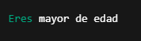

Existen tres tipos
CONDICIONALES if, elif, else

Son bloques de código que permiten controlar el flujo de ejecución de un programa mediante la evaluación de condiciones lógicas. Estas condiciones determinan qué secciones de código se ejecutarán, basándose en si una expresión evaluada es verdadera True o falsa False
Ver ejemploBUCLES For , While

Son estructuras de control fundamentales que permiten ejecutar repetidamente
un bloque de código mientras se cumpla una condición determinada
o para cada elemento en una secuencia.
Su propósito principal es automatizar tareas repetitivas , optimizando la escritura y eficiencia del código.
Control de Flujo Break , continue y Pass

El control de flujo en programación se refiere a los mecanismos que determinan el orden de ejecución de las
instrucciones en un programa.
En Python, este control se implementa mediante estructuras fundamentales que permiten:
Alterar la secuencia lineal de ejecución
Implementar lógica condicional
Controlar iteraciones
Manejar excepciones